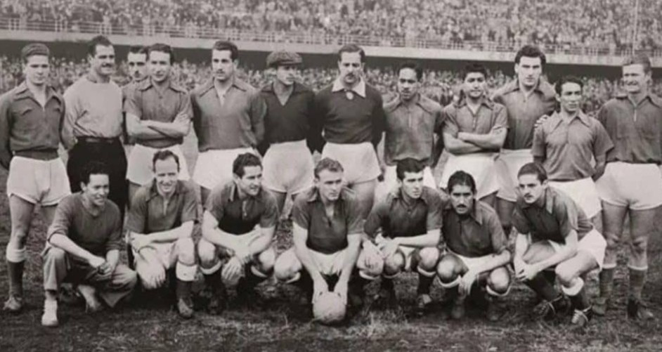

Fundado en 1939, aunque reconocido oficialmente en 1946, Millonarios se convirtió rápidamente en uno de los equipos más importantes y populares de Colombia. Durante la época dorada del fútbol colombiano en los años 50, conocida como "El Dorado", el club reunió a estrellas de talla mundial como Alfredo Di Stéfano, Adolfo Pedernera y Néstor Rossi, formando un equipo legendario apodado el "Ballet Azul". Millonarios dominó el fútbol colombiano en esa década, conquistando múltiples campeonatos y ganándose el reconocimiento internacional. A lo largo de su historia, ha acumulado un impresionante palmarés, incluyendo 16 títulos de Liga Colombiana, consolidándose como uno de los clubes más laureados del país. A pesar de altibajos y periodos de sequía de títulos, la pasión y el fervor de su hinchada, una de las más grandes y fieles de Colombia, siempre se han mantenido intactos. Millonarios ha sido cuna de grandes futbolistas colombianos y ha protagonizado emocionantes clásicos contra su eterno rival, Atlético Nacional. En la década de 2010, el equipo revivió épocas de gloria, conquistando nuevos títulos de liga y copa, reafirmando su lugar en la historia del fútbol colombiano. Millonarios FC sigue siendo un símbolo de tradición y grandeza en el deporte del país.
